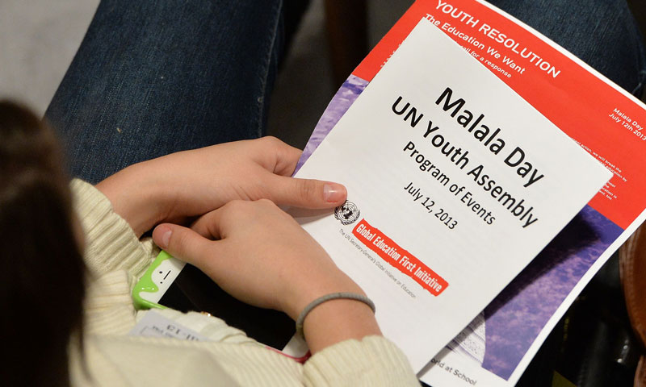

Garantir o acesso à educação inclusiva, de qualidade e equitativa, e promover oportunidades de aprendizagem ao longo da vida para todos.
“Uma criança, um professor, um livro e uma caneta podem mudar o mundo. A educação é a única solução”. - Malala Yousafzai, ativista e vencedora do Prêmio Nobel da Paz.
Na Conferência das Nações Unidas de 2013 a Malala Yousafzai disse a frase, que é considerado a mais impactante nos tempos recentes para conscientizar a qualidade da educação, principalmente em países do terceiro mundo.

A frase expressa um dos Objetivos de Desenvolvimento Sustentável (ODS) criados pelos países signatários da ONU em 2012 na Rio+20: a Educação de Qualidade.
Abaixo um video explicativo sobre a OSD #4: Educação de Qualidade.
O objectivo desse ODS é assegurar a educação inclusiva e equitativa e de qualidade, e promover oportunidades de aprendizagem ao longo da vida para todas e todos.
Soluçōes
1: Melhorar a infraestrutura escolar
O que muitas vezes parece simples, como o saneamento básico, pode impedir que milhares de estudantes tenham acesso à educação.
Uma das metas do ODS 4 propõe:
“construir e melhorar instalações físicas para educação, apropriadas para crianças e sensíveis às deficiências e ao gênero e que proporcionem ambientes de aprendizagem seguros e não violentos, includentes e eficazes para todos.”
Realizado pelo IBGE em 2014, o censo escolar divulgou que no Brasil apenas 5% das escolas em áreas rurais contam com esgoto encanado. A falta de infraestrutura dificulta a permanência dos alunos nas escolas, sendo um dos fatores que impede que existe uma educação de qualidade e igualitária a nível mundial.
2: Buscar a igualdade a partir da educação
Outro propósito do ODS 4 é que meninos e meninas ambos tenham a mesma educação.
A proposta se baseia na meta de “eliminar as disparidades de gênero na educação e garantir a igualdade de acesso a todos os níveis de educação e formação profissional para os mais vulneráveis, incluindo as pessoas com deficiência, povos indígenas e as crianças em situação de vulnerabilidade”.
Independente do gênero, todos tenham acesso à educação básica e superior, proporcionando que tenha mais profissionais capacitados com oportunidades igualitárias e justas.
3: Promover uma educação acessível e de qualidade
Para que essas desigualdades sejam eliminadas, é essencial que a educação de qualidade seja gratuita e, quando não gratuita, tenha preços razoáveis.
Levando em conta que atualmente milhares de pessoas vivem em situação de miséria, a educação gratuita é uma das maiores oportunidades de mudança desse cenário. Por isso, é tão importante garantir que crianças e jovens tenham suas necessidades como alimentação e saúde atendidas pelo menos no período em que estão na escola.
Uma das sugestões do ODS 4 é a de “até 2020 substancialmente ampliar globalmente o número de bolsas de estudo para os países em desenvolvimento, em particular, os países menos desenvolvidos, SIDS e os países africanos, para o ensino superior, incluindo programas de formação profissional, de tecnologia da informação e da comunicação (TIC), técnicos, de engenharia e científicos programas científicos em países desenvolvidos e outros países em desenvolvimento”.
4: Qualificar os profissionais da área da educação
Os professores eles os responsáveis por transmitir os conhecimentos para os alunos e, por isso, é necessário que sejam qualificados.
Segundo dados da UNESCO, até 2030 serão necessários 8,4 milhões de professores para que as necessidades de crianças e jovens do ensino primário e secundário sejam atendidas.
Alguns países sofrem com um enorme déficit de professores devido às condições de trabalho ruins e aos salários baixos. No Brasil o salário média de um professor em 2012 era equivalente a 51% do valor médio obtido por demais profissionais com nível superior completo. Assim, é importante que os líderes mundiais pensem em medidas que incentivem profissionais qualificados à promover a educação igualitária globalmente.
O objetivo é garantir que todas as pessoas tenham igual acesso a uma educação de qualidade. Isto requer um compromisso por parte dos governos, instituições e indivíduos para promover este direito até 2030. Isto inclui melhorar as qualificações dos professores, tornar a educação acessível a todos, melhorar as infraestruturas e promover o desenvolvimento dos estudantes como profissionais e cidadãos. A educação é crucial porque serve de base para outros direitos e oportunidades.
Você pode ler mais sobre os ODS e as metas a serem cumpridas até 2030 aqui.